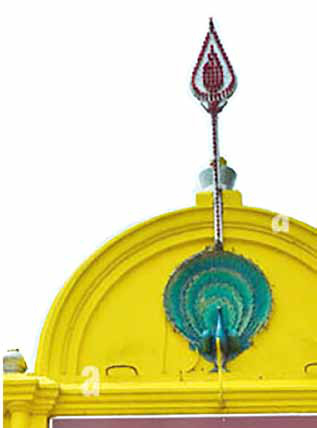
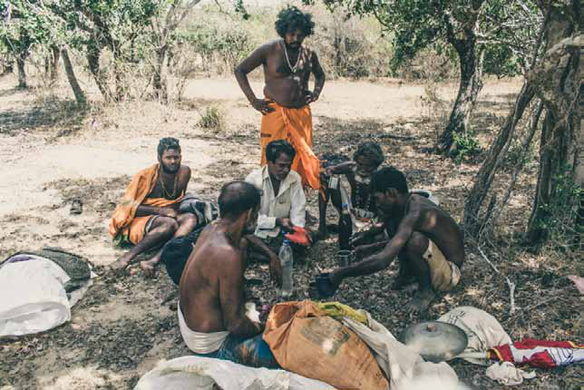
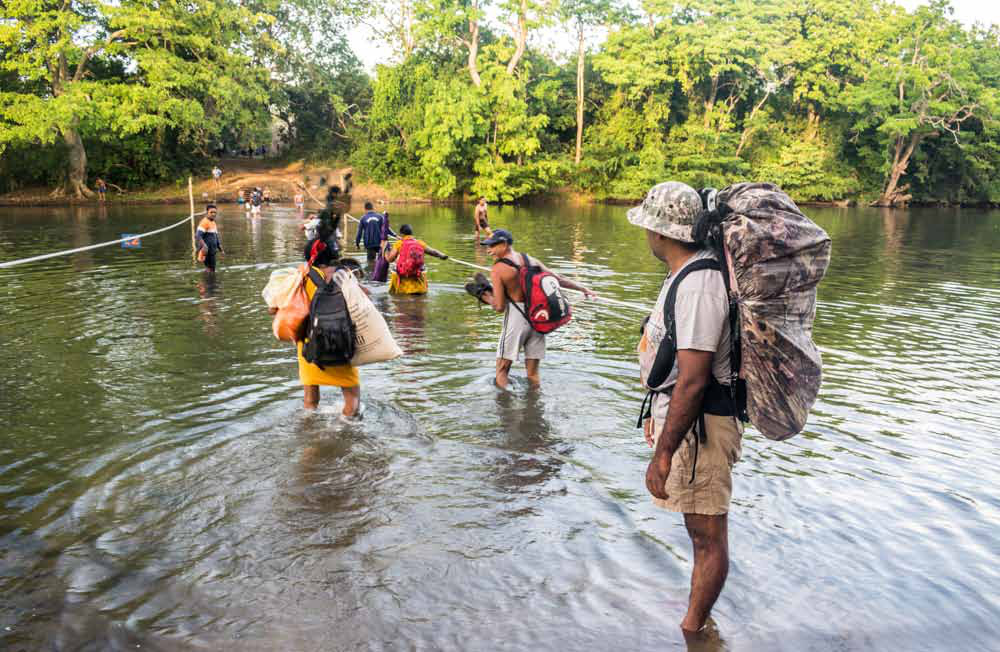
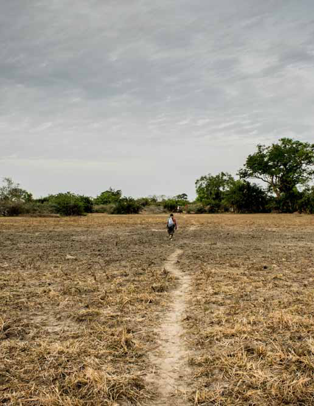
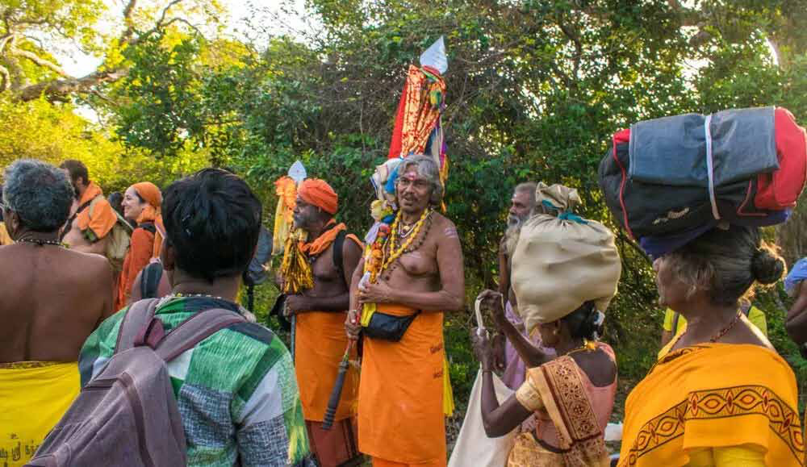
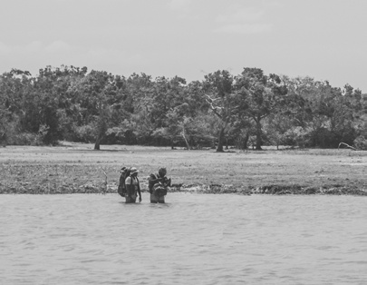
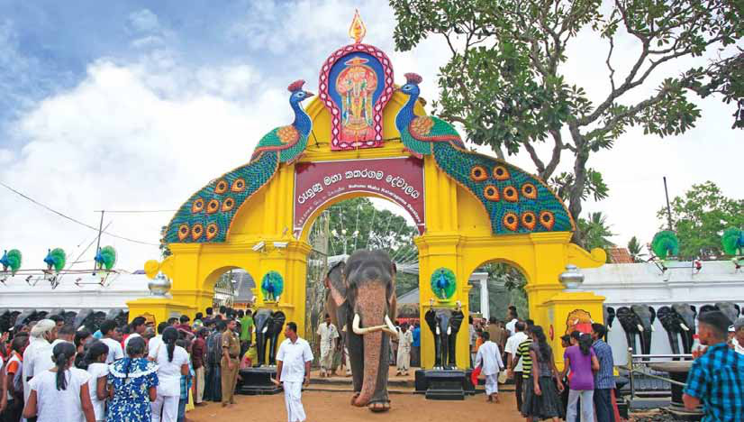

Historic Jungle Path to Kathirkamam Kandan Temple Opens for Annual Aadi Vel Festival
Historic Jungle Path to Kathirkamam Kandan Temple Opens for Annual Aadi Vel Festival
Jaffna Monitor hellojaffnamonitor@gmail.com 47 Historic Jungle Path to Kathirkamam Kandan Temple Opens for Annual Aadi Vel Festival


Jaffna Monitor hellojaffnamonitor@gmail.com 48 T he revered jungle path leading from the Ukanthamalai Murugan Kovil in Ukanthai, Ampara District of Eastern Sri Lanka, to the Katirkāmam Murugan Kōvil opened on June 30th, marking the beginning of the much-anticipated Aadi Vel festival of Katirkāmam. This sacred path, winding through dense jungle and home to diverse wildlife, will remain open until July 11th, allowing thousands of pilgrims to journey along this historic route to seek blessings at one of Sri Lanka's most esteemed religious sites. Each year, the foot pilgrimage witnesses a remarkable convergence of pilgrims from diverse religious and ethnic backgrounds, creating a unique atmosphere of unity and reverence. This challenging journey through the jungle spans approximately BY: Our Batticaloa Reporter


Jaffna Monitor hellojaffnamonitor@gmail.com 49 120 kilometers and attracts not only the able-bodied but also elders who can barely walk and children as young as three to four years old. This participation highlights the pilgrimage's profound spiritual commitment and the strength of its traditions. Participants undertake this journey with immense dedication, driven by their faith and the desire to seek blessings at the sacred Katirkāmam Murugan Kōvil. The pilgrimage route, which winds through dense jungles teeming with wildlife, adds an element of adventure and unpredictability, further enriching the spiritual experience. The sight of diverse groups of people, irrespective of age or physical ability, embarking on this shared path of devotion underscores the festival's powerful impact on the collective consciousness of the community. Numerous religious organizations coordinate the logistics of the Padha Yatra, facilitating


Jaffna Monitor hellojaffnamonitor@gmail.com 50 groups of pilgrims on their spiritual journey. Many devotees also choose to undertake this pilgrimage individually, driven by personal faith and the serene call of the jungle path. "Kataragama" is synonymous with belief, faith, and devotion. It is a place where devotees from all corners of Sri Lanka, irrespective of pride or prejudice, come to ask Kataragama Deviyo, the Hindu war god Murugan, for favors, often bound by a promise to be repaid. During the peak season, hundreds of devotees pack all corners of the temple grounds, bearing offerings of fruit baskets laden with fruits. The sound of coconuts crashing to the ground and devotees chanting prayers is a common sight, with some extreme devotees putting their bodies through mortal pain, driven by the notion of immortal satisfaction from the gods. A significant highlight of this devotion is the annual foot pilgrimage made by


Jaffna Monitor hellojaffnamonitor@gmail.com 51 devotees from hundreds of kilometers away, converging on the temple grounds after a quick wash in the river bordering the sacred grounds. Ordinary people who feel they have received a 'call' take part in this marathon walk, leaving behind everything but a bundle of essentials, experiencing the life of a poor or religious recluse. The pilgrimage offers profound lessons about the paradoxes of life through a sustained act of self-denial. Every year, a notable number of devotees from the Selva Sannidhi Murugan Temple in Thondaimanaru, Jaffna, undertake a long pilgrimage walk. This journey spans approximately 48 days and covers 815 kilometers, passing through the Northern, Eastern, and Uva provinces and the districts of Jaffna, Kilinochchi, Mullaitivu, Trincomalee, Batticaloa, Ampara, and Monaragala. This pilgrimage is considered the longest holy journey in Sri Lanka, during which devotees visit hundreds of temples. The devotees from Selva Sannidhi Murugan Temple join those at the Ukanthai Murugan Temple to continue their journey along the forest path. Among them is Murugenthiram, a 70-year-old regular Yatra participant, who shared with the Jaffna Monitor that this is his 15th time undertaking the pilgrimage. He emphasized the significance of the pilgrimage in Hindu beliefs, stating that undertaking a long Yatra at least once a year helps align the body and mind. Murugenthiram explained that his life changed dramatically after he started going on Yatras, as he now harbors only positive thoughts. Given the uncertainties that may arise, he elaborated that a tremendous amount of positive thinking is required for such a long journey. "Whether it rains or not, you won't complain. Rather, you will see it as God's gift," he said. "Eventually, this mindset shifts your perspective entirely. You start seeing only positive things and generating positive thoughts, not just during the Yatra but also in everyday life," he concluded.
